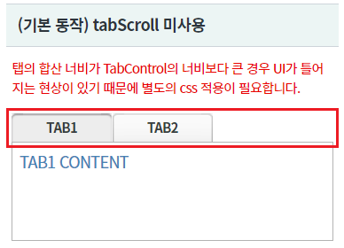
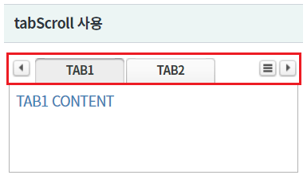
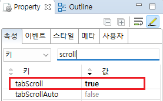
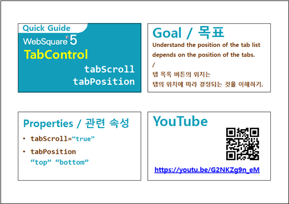

TabControl의 속성 tabScroll 예제입니다. 속성 tabScroll을 "true"로 지정하면 탭의 목록을 표시할 수 있는 버튼과 탭의 좌우 이동 버튼을 제공합니다.
일반적으로 탭의 수가 고정되어 있지 않거나 탭의 합산 너비가 TabControl의 최소 너비보다 큰 경우 tabScroll을 "true" 지정합니다.
탭의 합산 너비가 TabControl의 너비보다 큰 경우 UI가 틀어지는 현상이 있기 때문에 별도의 css 적용이 필요합니다.
(기본 동작) tabScroll 미사용
tabScroll 사용
각 영역의 TabControl의 탭 영역의 기능 버튼 유무를 비교합니다.
영역 [(기본 동작) tabScroll 미사용]의 TabControl의 탭 영역을 확인합니다.
[브라우저(Chrome) 실행 예시]

영역 [tabScroll 사용]의 TabControl의 탭 영역을 확인합니다.
탭 영역에 버튼 "탭 이동"과 버튼 "탭 목록 보기"가 포함되어 있습니다.
[브라우저(Chrome) 실행 예시]

TabControl의 속성을 정의합니다.
[필수] tabScroll="true" //탭 영역에 탭들의 이동과 선택의 편의성을 제공하는 기능 사용 설정
그림 1.웹스퀘어5 SP5 스튜디오의 Property View(속성창) 예시

[소스 코드 예시]
<!-- tabControl 소스 본문 예시 --> <w2:tabControl tabScroll="true" id="tac_exam2"> <!-- 중략 --> </w2:tabControl>
tabScroll
[웹스퀘어5 SP5 개발 가이드] TabControl
링크 : https://docs1.inswave.com/sp5_user_guide/2059d4ce88b2fc16#0eeccc9d7fde2d33
[웹스퀘어5 SP5 개발 가이드] TabControl - 스크롤 및 탭목록 버튼 표시 (tabScroll="true")
링크 : https://docs1.inswave.com/sp5_user_guide/2059d4ce88b2fc16#35ea0b0b817ace5d
TabControl - 스크롤 및 탭목록 버튼 표시
링크 : https://youtu.be/G2NKZg9n_eM
